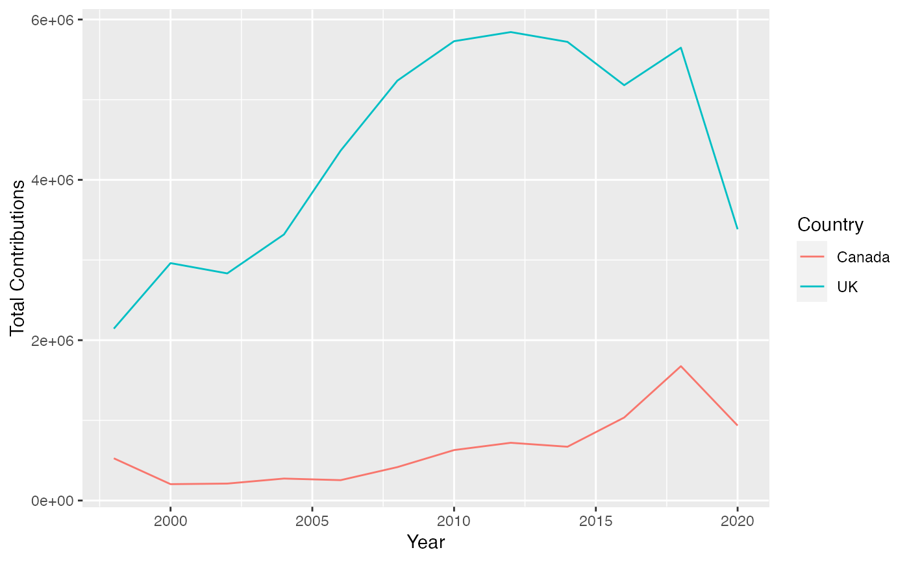

Every election cycle brings its own brand of excitement – and lots of money. Political donations are of particular interest to political scientists and other researchers studying politics and voting patterns. They are also of interest to citizens who want to stay informed of how much money their candidates raise and where that money comes from.
pac_all
A tibble with 2156 rows and 7 variables:
Name of company (American divisions of a foreign company)
Country of origin
PAC parent company
Total PAC contributions to all parties
PAC contributions to the Democratic Party
PAC contributions to the Republican Party
Election cycle year
https://www.opensecrets.org/political-action-committees-pacs/foreign-connected-pacs
In the United States, “only American citizens (and immigrants with green cards) can contribute to federal politics, but the American divisions of foreign companies can form political action committees (PACs) and collect contributions from their American employees.” (source: OpenSecrets.org)
The data come from the OpenSecrets.org.
The data were scraped from the OpenSecrets.org website in June 2020. It is part of a series of similar datasets in this package consisting of datasets collected from OpenSecrets via webscraping.
This particular dataset consists of the data for foreign-connected PAC contributions for all available elections cycles, in raw form as it was when scraped from the website on 11 Nov 2020.
pac_2020_raw, pac_2020, pac_all_raw
library(dplyr) library(ggplot2) pac_all %>% filter(country %in% c("Canada", "UK")) %>% group_by(country, year) %>% summarise(tot = sum(total)) %>% ggplot(aes(x = year, y = tot, group = country, color = country)) + geom_line() + labs( x = "Year", y = "Total Contributions", color = "Country" ) #> `summarise()` has grouped output by 'country'. You can override using the `.groups` argument. 